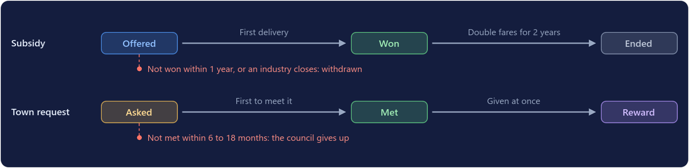

Subsidies & requests
Offers anyone can take: double fares, and what councils ask for.
Now and then the regional board offers a subsidy, and town councils ask for something. Goals lists them under Opportunities, and the news says when one is offered, won or runs out.
Subsidies
- A subsidy names a cargo, where it comes from and where it goes. It comes from an industry nobody has served for 90 days, or for waste from a town of 400 people or more. It goes to an industry that takes it, or to a town of 400 people or more for goods, food or newspapers (1,000 for cars). The route is 15 to 60 tiles long.
- Your first delivery of it to a station that reaches the destination, loaded at a station that reaches the source, wins it. Transfers on the way count: what matters is where the cargo was first loaded.
- From then on your deliveries on that route pay double for 2 years. Anyone else on the route is paid the usual fare.
- An offer nobody takes lapses after a year. If an industry at either end closes, the offer is withdrawn, and a subsidy already won ends with it.
- While fewer than 2 are on offer, each month brings a 12% chance of a new one.


Town requests
A council asks for something that fits its town, by a deadline. A town has one request at most, and its window shows it under Requests & rewards; bigger towns ask more often.
| Request | Asked by | Met by | Reward, one of |
|---|---|---|---|
| Passenger link | Towns of 700 people or more | The first passengers carried to a town 15 to 60 tiles away with 200 people or more that nobody links yet. Between two towns of 1,500 or more the council may want it by train. | a year of exclusive transport rights +25 council rating |
| Supply | Towns of 400 people or more | Goods or food (the request names one) delivered into the town: about 2.5 units a month for every 100 people, over its time. | six months of fast growth a grant of $50,000 |
| Visitors | Towns with an attraction | Passengers delivered to a station that reaches the attraction: about 4 a month for every 100 people, over its time. | a grant of $50,000 +25 council rating |
| Service | Towns where someone has a station | Every one of your stations in town rated 60% or more at 12 month ends in a row. A month end that falls short starts the count again. | a year of half-price stations and depots +25 council rating |
- A request gives 6 to 18 months, a service request 18. Up to 2 are open on the map at once, and each month brings a 12% chance of a new one.
- Each company's progress counts on its own, and the first to get there wins. The reward is set when the council asks, and shown with the request.
- The Goals window shows how far you have got and how far the best rival has, with a button that shows the town.
Rewards
- +25 on your rating with the council.
- A grant of $50,000.
- Exclusive transport rights for a year: other companies' stations in the town get no new passengers or cargo, though deliveries into the town still pay. They end early if the holder goes bankrupt.
- Half-price stations and depots for a year, wherever that town is the nearest one within 18 tiles.
- A building boom: the town grows fast for 180 days, as when you fund buildings.